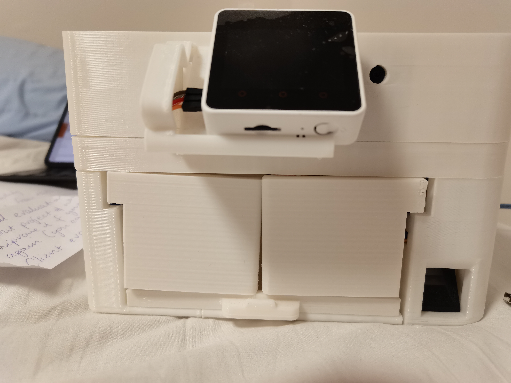
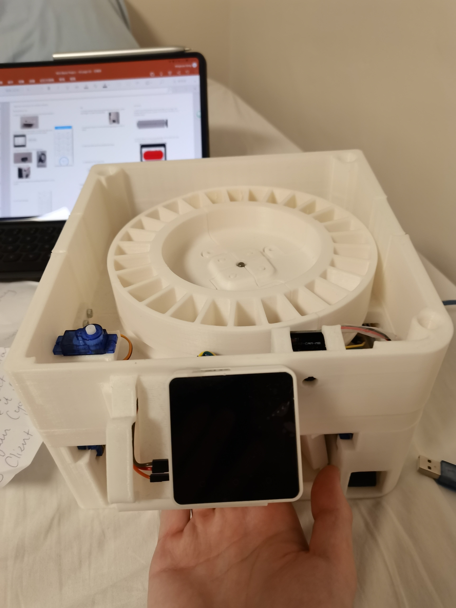
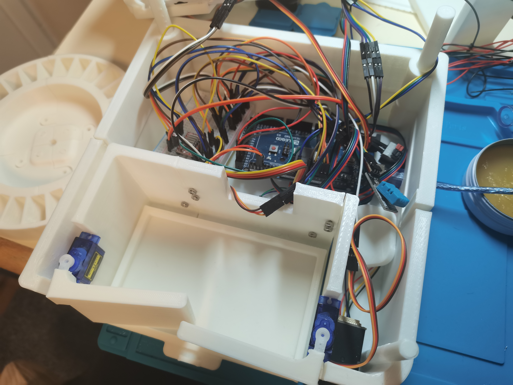

Engineered a smart pill dispenser that combines a 3D‑printed enclosure with micro‑servo actuated doors to deliver daily doses on schedule. An integrated touchscreen interface and smartphone connectivity allow users to programme medication times and receive remote notifications. The design incorporates a child‑lock to prevent accidental access and uses sensors to confirm pill dispensing, sending alerts to family members if a dose is missed.


